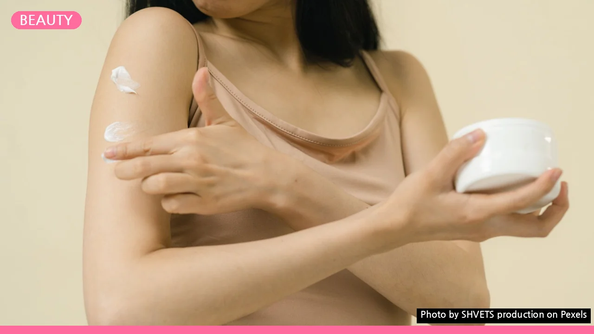
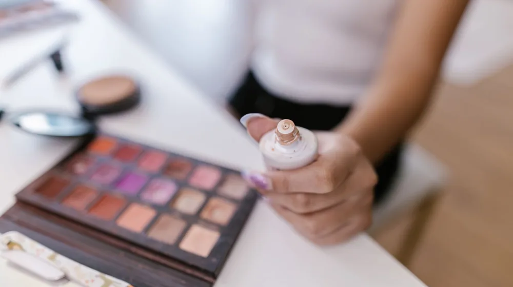

내 피부에 착붙! 쿠션 파데 성분 고르는 법 & 주의사항 체크리스트
사진: SHVETS production / Pexels (무료 이미지, 출처 표기)
쿠션 파운데이션, 왜 성분 확인이 중요할까?

매일 사용하는 쿠션 파운데이션은 피부에 직접 닿아 오랜 시간 머무르는 제품입니다. 단순히 색상이나 발림성만 보고 구매하기보다는, 어떤 성분으로 이루어져 있는지 꼼꼼히 확인하는 과정이 중요합니다. 특히 민감하거나 트러블이 잦은 피부라면, 특정 성분이 피부 문제를 악화시킬 수 있기 때문에 성분 체크는 필수입니다.
내 피부 타입에 맞지 않는 성분은 자극, 건조함, 트러블 유발 등 다양한 피부 문제를 일으킬 수 있습니다. 건강한 피부를 유지하며 예쁜 메이크업을 완성하기 위해, 지금부터 2026년 11월 기준으로 쿠션 파운데이션 성분 선택 가이드를 살펴보겠습니다.
내 피부 타입별 쿠션 파운데이션 성분 고르기
피부 타입은 크게 건성, 지성, 민감성, 복합성, 트러블성으로 나눌 수 있습니다. 자신의 피부 타입에 맞는 성분을 고르는 것이 피부 건강을 지키는 첫걸음입니다.
- 건성 피부: 수분 부족으로 쉽게 건조해지고 각질이 들뜨기 쉬운 건성 피부는 보습 성분이 풍부한 쿠션 파운데이션이 좋습니다. 히알루론산, 세라마이드, 글리세린, 스쿠알란 등 보습력이 뛰어난 성분이 함유된 제품을 선택하세요. 피부 장벽 강화에 도움을 주는 오일 성분이 포함된 것도 도움이 됩니다.
- 지성 피부: 과도한 피지 분비로 번들거림과 모공 막힘이 고민인 지성 피부는 피지 조절 기능이 있는 성분을 우선적으로 고려해야 합니다. 실리카, 녹차 추출물 등이 피지 흡수 및 조절에 도움을 줄 수 있습니다. '논코메도제닉(Non-comedogenic)' 제품인지 확인하는 것도 중요합니다.
- 민감성 피부: 작은 자극에도 쉽게 붉어지고 가려움을 느끼는 민감성 피부는 성분 개수가 적고 자극이 적은 제품을 선택해야 합니다. 무향료, 무색소 제품을 고르고, 병풀 추출물(시카), 알란토인 등 진정 성분이 함유된 제품이 좋습니다. 알코올, 향료 등 자극을 유발할 수 있는 성분은 피해야 합니다.
- 트러블성 피부: 여드름이나 뾰루지가 자주 나는 트러블성 피부는 지성 피부와 마찬가지로 '논코메도제닉' 제품을 선택하는 것이 기본입니다. 살리실산(BHA), 티트리 오일 등 트러블 완화에 도움을 줄 수 있는 성분이나, 항염 효과가 있는 성분 함유 여부를 확인하세요. 단, 과도한 살리실산은 피부에 자극을 줄 수 있으니 함량을 확인하는 것이 좋습니다.
이것만은 피하세요! 쿠션 파운데이션 주의 성분
모든 사람에게 해당되는 것은 아니지만, 일반적으로 피부 자극이나 알레르기를 유발할 가능성이 있다고 알려진 성분들이 있습니다. 특히 민감성 피부라면 더욱 주의 깊게 확인해야 합니다.
위 표의 성분들은 모든 사람에게 문제가 되는 것은 아니지만, 개인의 피부 민감도에 따라 반응이 다를 수 있습니다. 특히 새로운 제품을 사용하기 전에는 팔 안쪽 등 민감하지 않은 부위에 먼저 소량 발라보는 패치 테스트를 권장합니다.
쿠션 파운데이션, 더 안전하게 사용하는 팁
아무리 좋은 성분으로 만들어진 쿠션 파운데이션이라도 올바르게 사용하지 않으면 피부에 부담을 줄 수 있습니다. 몇 가지 사용 팁을 통해 피부 건강을 지키세요.
- 퍼프 위생 관리: 쿠션 퍼프는 피부와 직접 닿고, 습한 환경에 놓여 세균 번식의 온상이 되기 쉽습니다. 최소 1주일에 한 번은 전용 클렌저나 순한 비누로 세척하고, 완전히 건조시킨 후 사용하세요. 오염된 퍼프는 피부 트러블의 주범이 될 수 있습니다.
- 유통기한 확인: 개봉 후 유통기한(PAO, Period After Opening)을 꼭 확인하세요. 일반적으로 쿠션 파운데이션은 개봉 후 6개월에서 1년 이내에 사용하는 것이 좋습니다. 오래된 제품은 변질되어 피부에 자극을 주거나 트러블을 유발할 수 있습니다.
- 소량 사용 및 꼼꼼한 클렌징: 쿠션 파운데이션은 소량으로 얇게 펴 바르는 것이 자연스러운 피부 표현에 좋습니다. 사용 후에는 반드시 꼼꼼하게 클렌징하여 잔여물이 남지 않도록 해야 합니다. 이중 세안 등을 통해 메이크업 잔여물을 깨끗하게 제거해주세요.
쿠션 파운데이션 구매 전 최종 체크리스트
성분부터 사용 습관까지, 내 피부에 잘 맞는 쿠션 파운데이션을 선택하고 안전하게 사용하기 위한 최종 체크리스트입니다.
- 내 피부 타입에 맞는 보습/피지 조절/진정 성분이 충분히 함유되어 있는가?
- 피부에 자극을 줄 수 있는 알코올, 인공 향료, 인공 색소 등의 주의 성분은 없는가?
- 지성 또는 트러블성 피부라면 '논코메도제닉' 표기가 있는지 확인했는가?
- 자외선 차단 지수(SPF/PA)는 내가 원하는 수준인가?
- 제품의 유통기한과 개봉 후 사용기한을 확인했는가?
- 새로운 제품 사용 전 패치 테스트를 해볼 계획인가?
이 체크리스트를 통해 현명하게 쿠션 파운데이션을 선택하고 건강한 피부를 유지하시길 바랍니다. 제품에 대한 정확한 성분 정보는 각 브랜드의 공식 홈페이지나 화장품 성분 분석 앱에서 다시 확인하시길 권장합니다.
🔗 이 글도 함께 보면 좋아요: 나전칠기 소품, 후회 없이 고르는 법 | 초보자도 안심 체크리스트
관련 추천 상품
쿠션 파운데이션, 비건 쿠션, 민감성 쿠션 관련 인기 상품 보러가기
이 포스팅은 쿠팡 파트너스 활동의 일환으로, 이에 따른 일정액의 수수료를 제공받습니다.